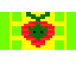

<!DOCTYPE html>
<html lang="" en-us></html>
<!--Name: Kaedyn
Course: Web Development 20s
Teacher: Ms. Hoitink
School: Pembina Trails Collegiate (PTC)
Date Last Modified: 2023/22/9-->
<head>
  <meta charset="utf-8" />
  <meta name="viewport" content="initial-scale=1.0, user-scalable=yes" />
  <title>The Kormins</title>
  <!--General Code-->
</head>
<body>
  <header>
    <h1>
      <b>
        <u>WELCOME TO THE KORMINS</u>
      </b>
    </h1>
    <!--Header-->
  </header>
  <main>
    <p>
      This is the homepage for the Kormins. If you are not a Kormin citizen, we
      advise you follow the link below to an introductory to Kormin
      civilization. Fellow Kormins may access our various commodities, such as
      the Kormin market and task managing.
      <br />
      <b
        >May the Kormins stand taller-than-our-tall-fellows and conquer the
        stars!</b
      >
    </p>
    <!--Opening Paragraph-->
    <a href="test.html">Ambassador Test</a>
    <!--Link To Ambassador Test-->
    <hr />
    
    <p><sup>The Kormin Flag By Anonymous</sup></p>
    <!--Image & creds-->
    <hr />
  </main>
  <nav>
    <a href="calendar.html">Calendar</a>
    <a href="market.html">Marketplace</a>
    <a href="news.html">Global Kormin News</a>
    <!--This is the navbar at the bottom-->
  </nav>
  <footer>
    <p>
      For questions and concerns about the Kormin Inititive, please ask your
      local Task Manager.
    </p>
    <!--Good for avoiding lawsuits-->
  </footer>
</body>
